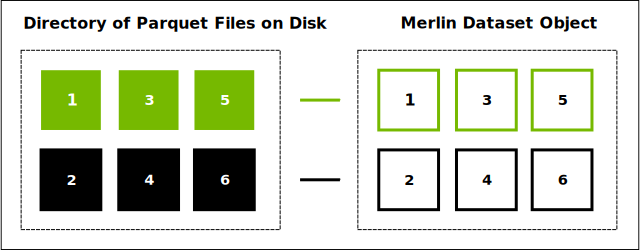
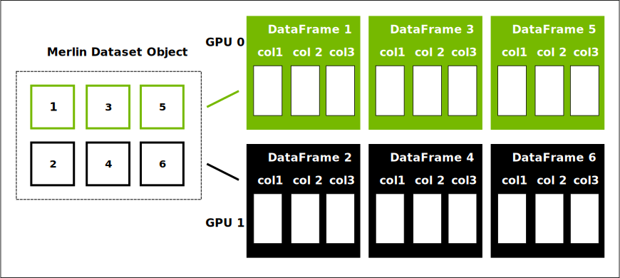

About the Merlin Dataset
On-disk Representation
The Apache Parquet file format is the most-frequently used file format for Merlin datasets.
Parquet is a columnar storage format. The format arranges the values for each column in a long list. This format is in contrast with a row-oriented format—such as a comma-separated values format—that arranges all the data for one row together.
As an analogy, columnar storage is like a dictionary of columns instead of row-oriented storage that is like a list of rows.
In most cases, a Parquet dataset includes multiple files in one or more directories.

The Merlin dataset class, merlin.io.Dataset, treats a collection of many Parquet files as a single dataset.
By treating the collection as a single dataset, Merlin simplifies distributing computation over multiple GPUs or multiple machines.
The dataset class is not a copy of the data or a modification of the Parquet files. An instance of the class is similar to a collection of pointers to the Parquet files.
When you create an instance of the dataset class, Merlin attempts to infer a schema by reading one record of the data. Merlin attempts to determine the column names and data types.
Processing Data: Dataset and DataFrame
When you perform a computation on a Merlin dataset, the dataset reads from the files on disk and converts them into a set of DataFrames.
The DataFrames, like Parquet files, use a columnar storage format.
The API for a DataFrame is similar to a Python dictionary—you can reference a column with syntax like dataframe['col1'].

Merlin processes each DataFrame individually and aggregates the results across the DataFrames as needed.
There are two kinds of computations that you can perform on a dataset: fit and transform.
The fit computations perform a full pass over the dataset to compute statistics, find unique values, perform grouping, or another operation that requires information from multiple DataFrames.
The transform computations process each DataFrame individually.
These computations use the information gathered from fit to alter the DataFrame.
For example the Normalize and Clip Operators compute new values for columns and the Rename Operator adds and removes columns.